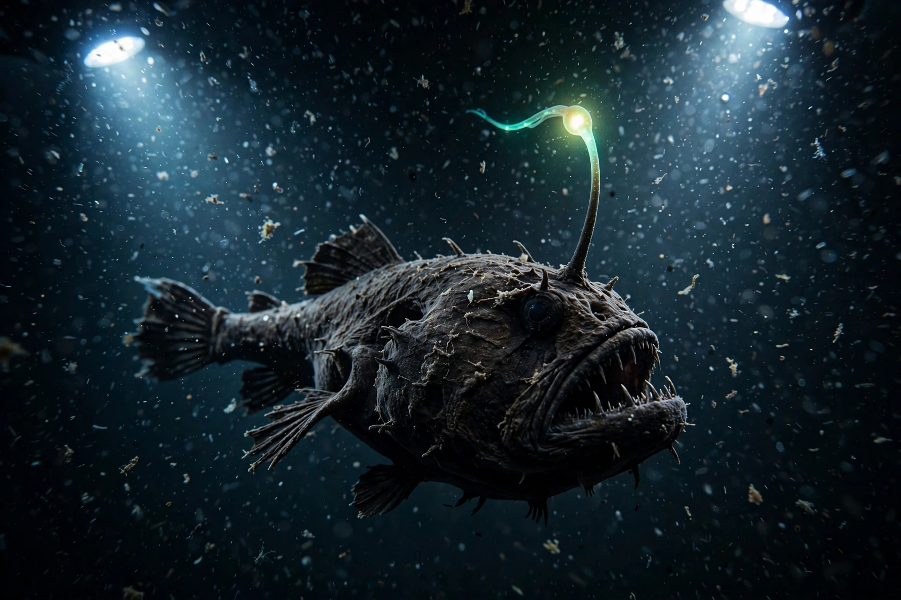

Deep sea

The deep sea is the vast region of the ocean below the reach of sunlight, conventionally beginning at about 200 metres depth. It is the largest habitat on Earth: cold (mostly 2–4 °C), dark, and under crushing pressure, yet inhabited almost everywhere by life adapted to scarcity.
The deep sea includes the bathyal, abyssal and hadal zones; its floor is mostly abyssal plain at 4,000–6,000 metres, cut by trenches that reach nearly 11,000 metres at the {L('Mariana_Trench')}.
Conditions and food supply
Below the sunlit surface layer, photosynthesis is impossible, so most deep-sea life depends on 'marine snow' — the slow rain of detritus from above — supplemented by bonanzas such as whale falls and by chemosynthesis at {L('Hydrothermal_vent','hydrothermal vents')} and cold seeps, where bacteria harness chemical energy instead of sunlight.
Animals cope with scarcity through slow growth, huge mouths and expandable stomachs, extreme longevity, and bioluminescence, which is widespread among deep-sea fishes and invertebrates and used for signalling, camouflage and luring prey.
Exploration and threats
The deep sea was long accessible only through dredges and trawls; submersibles such as Trieste (which reached the Challenger Deep in 1960) and Alvin, and today's remotely operated vehicles, have opened it to direct observation. Much of it remains unexplored, and new species are described continually.
Pressures are growing: bottom trawling, plastic and chemical pollution reaching the abyss, interest in mining polymetallic nodules from abyssal plains, and warming and deoxygenation tied to {L('Climate_change')} all reach into the deep.
See also: Ocean · Hydrothermal vent · Mariana Trench · Challenger Deep · Ocean current